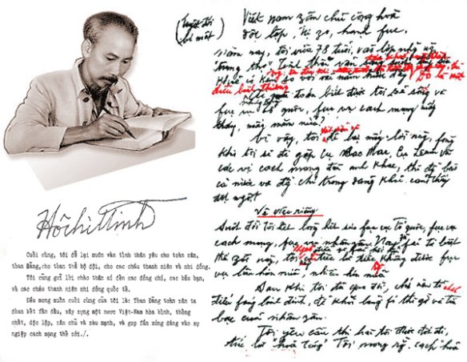
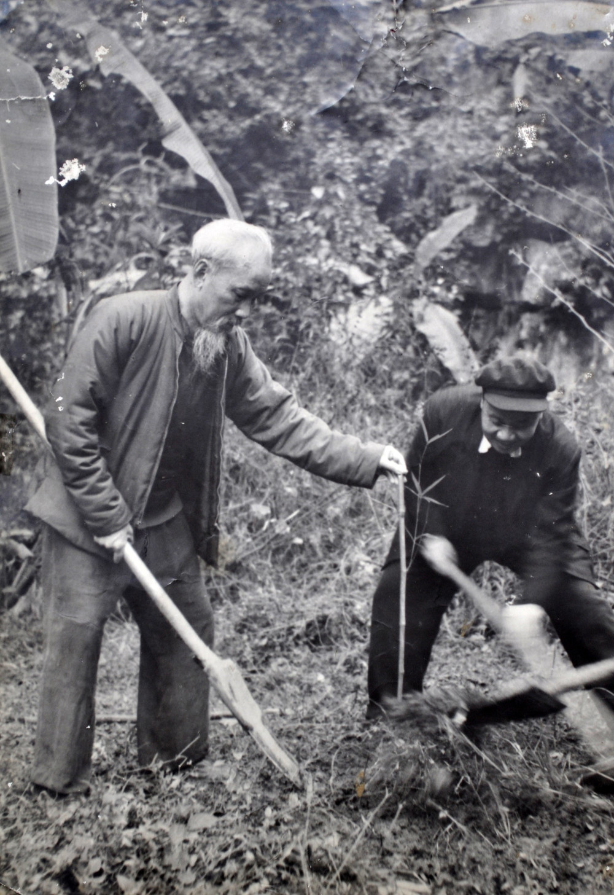
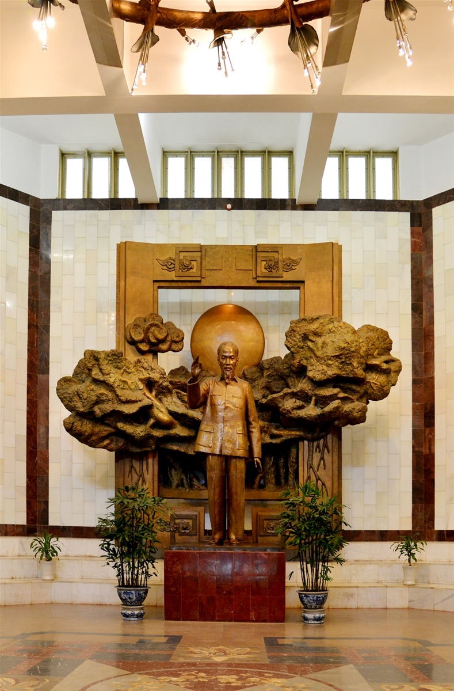

Một phần quan trọng trong di sản của Chủ tịch Hồ Chí Minh là tư
tưởng về độc lập dân tộc, quyền tự do của con người và hạnh phúc
của nhân dân. Với Người, giành được độc lập là mục tiêu lớn, nhưng
đất nước độc lập cũng cần đem lại cuộc sống tốt đẹp cho người dân.
Vì vậy, trong suốt quá trình hoạt động, Người luôn gắn nhiệm vụ
bảo vệ Tổ quốc với việc chăm lo đời sống, giáo dục và quyền làm
chủ của nhân dân.
Người cũng đặc biệt coi trọng đại đoàn kết dân tộc. Theo tư tưởng
ấy, sức mạnh để vượt qua khó khăn đến từ sự gắn bó của mọi tầng
lớp, dân tộc và tôn giáo cùng hướng về lợi ích chung của đất nước.
Những suy nghĩ về độc lập, con người và đoàn kết là phần di sản
tinh thần được nhiều thế hệ tiếp tục nghiên cứu.
Chủ tịch Hồ Chí Minh để lại nhiều tác phẩm gắn với những giai đoạn
khác nhau của lịch sử. Tuyên ngôn Độc lập, được Người đọc ngày
2/9/1945, khẳng định sự ra đời của nước Việt Nam Dân chủ Cộng hòa
và quyền độc lập của dân tộc Việt Nam. Nhật ký trong tù là tập thơ
chữ Hán được viết trong thời gian Người bị giam giữ ở Quảng Tây,
Trung Quốc, từ năm 1942 đến 1943. Tác phẩm cho thấy nghị lực và
đời sống tinh thần của Người giữa hoàn cảnh khó khăn.
Trong những năm cuối đời, Người viết và bổ sung bản Di chúc, gửi
gắm những điều tâm huyết về việc xây dựng đất nước và chăm lo cho
nhân dân sau chiến tranh. Trên trang web, bạn có thể trình bày ba
tác phẩm này thành ba thẻ nhỏ, mỗi thẻ gồm tên tác phẩm, một mốc
năm và vài dòng giới thiệu.

Di sản của Bác còn thể hiện qua cách sống và làm việc. Dù giữ
cương vị lãnh đạo đất nước, Người sống giản dị, quan tâm đến những
việc gần gũi với đời sống hằng ngày. Hình ảnh Bác thăm hỏi người
dân, chăm sóc cây cối hay cùng mọi người lao động giúp người xem
cảm nhận rõ hơn sự gần gũi ấy.
Tinh thần tự học và làm việc có trách nhiệm cũng là điều đáng giới
thiệu ở mục này. Bạn có thể kể phong cách sống của Người bằng
những chi tiết cụ thể thay vì chỉ dùng các từ khen ngợi: ngôi nhà
sàn, góc làm việc, vườn cây và những bức ảnh Bác gặp gỡ đồng bào.
Như vậy, người đọc sẽ nhìn thấy phong cách ấy qua tư liệu và hiện
vật.

Ngày nay, nhiều địa điểm và hiện vật giúp công chúng tìm hiểu cuộc
đời, hoạt động và tư tưởng của Chủ tịch Hồ Chí Minh. Khu Di tích
Chủ tịch Hồ Chí Minh tại Phủ Chủ tịch lưu giữ các không gian gắn
với những năm Người sống và làm việc, trong đó có nhà sàn, Nhà 54
và ao cá. Nhà sàn là nơi Người ở và làm việc từ tháng 5/1958 đến
tháng 8/1969.
Bên cạnh các di tích, Bảo tàng Hồ Chí Minh sưu tầm, bảo quản và
giới thiệu bản thảo, sách có bút tích, ảnh, đồ dùng sinh hoạt và
những hiện vật liên quan đến Người. Nhờ các tư liệu ấy, thế hệ sau
có thể tiếp cận lịch sử qua những dấu tích cụ thể, tiếp tục tìm
hiểu và gìn giữ di sản của Bác.
